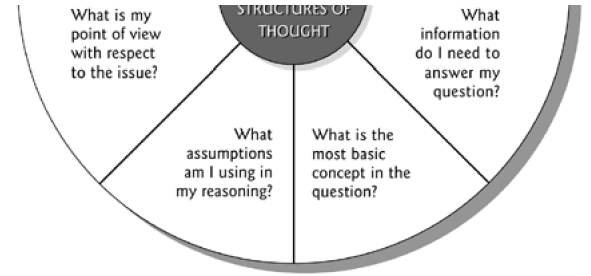
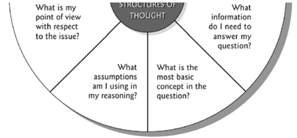
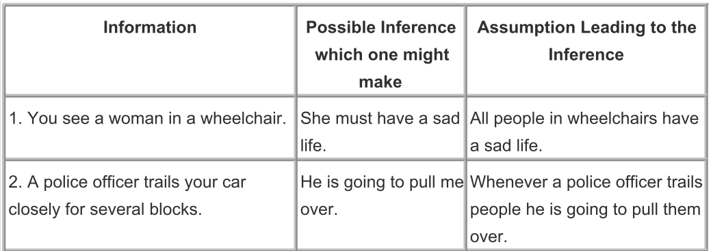
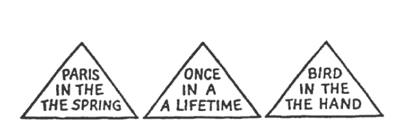
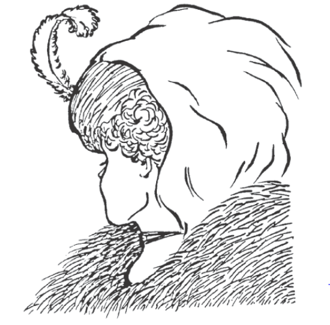
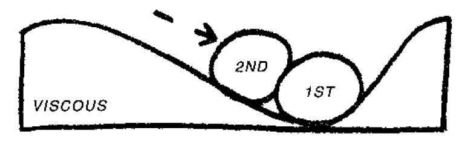
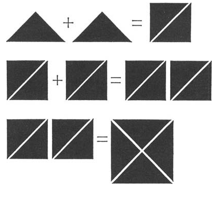

\"Say what you mean and mean what you say\" is a sound principle of critical thinking (and of personal integrity, for that matter).
-
We must be idealistic (and thus capable of imagining a better world).
-
We must be realistic (and thus see things as they are).
-
We must be pragmatic (and thus adopt effective measures for moving toward our ideals).
Thinking, feeling and wanting
It is important to recognize that the mind is composed of three functions:
-
Thinking
-
Feeling
-
Desiring (or wanting)
Wherever one of these functions is present, the other two are present as well. And these three functions are continually influencing and being influenced by one another. Our thinking influences our feelings and desires. Our feelings influence our thinking and desires. Our desires influence our thinking and feeling. We cannot immediately change our desires or feelings. It is only thinking that we have direct access to. It makes no sense for someone to order you to feel what you do not feel or to desire what you do not desire. We do not change feelings by substituting other feelings, or desires by substituting other desires. But someone can suggest that we consider a new way to think. We can role-play new thoughts, but not new emotions or desires. It is possible to reason within a point of view with which we do not agree. By rethinking our thinking, we may change our thinking. When our thinking changes, our feelings and desires will shift in accordance with our thinking.
Changing negative feelings caused by irrational thinking
-
Identify a feeling you have experienced that you suspect might be irrational (a feeling such as irritability, resentment, arrogance, or depression).
-
What thinking would account for the feeling? There may be more than one possibility here. If so, figure out which possibility is most likely.
-
Determine the extent to which the thinking is reasonable. Pay close attention to the reasons you give to justify the thinking. Is it possible that these are not your actual reasons? Can you think of any other motives you might have? Consider alternative interpretations of the situation.
-
If you conclude that the feeling is irrational, express precisely why you think so.
-
Construct thinking that would represent a rational response in the situation. Actively attack the irrational thinking with the thinking that is rational. Actively rehearse the thinking that represents a rational response.
Changing irrational behavior grounded in irrational desires or motivations
-
Identify the questionable behavior (behavior that is getting you in trouble, causing problems for you, or causing problems for someone else).
-
Identify the precise thinking leading to that behavior. What is the thinking that is generating the motivation to act in this manner?
-
Analyze the extent to which the thinking is justified, without leaving out any significant relevant information.
-
If the thinking is irrational, develop thinking that would be reasonable in this situation.
-
Actively attack the unreasonable thinking with reasonable thinking.
A well-cultivated critical thinker...
-
raises vital questions and problems, formulating them clearly and > precisely;
-
gathers and assesses relevant information, and effectively > interprets it;
-
comes to well-reasoned conclusions and solutions, testing them > against relevant criteria and standards
-
thinks open mindedly within alternative systems of thought, > recognizing and assessing, as need be, their assumptions, > implications, and practical consequences; and
-
Communicates effectively with others in figuring out solutions to > complex problems.
Critical thinking is, in short, self-directed, self-disciplined, self-monitored, and self-corrective thinking. It presupposes assent to rigorous standards of excellence and mindful command of their use. It entails effective communication and problem-solving abilities.
Critical thinking adds a second level of thinking to ordinary thinking. The second level analyzes and assesses our ordinary thinking.
First-Order-Thinking:
It is spontaneous and non-reflective. It contains insight, prejudice, truth and error, good and bad reasoning, all combined
Second-Order-Thinking:
Is first-order-thinking raised to the level of conscious realization (analyzed, addressed, and reconstructed)
-
We can develop in such a way that we learn to see mistakes in our > own thinking, as well as the thinking of others
-
Or we can merely develop some proficiency in making our > opponent\'s thinking look bad.
-
Typically, people see mistakes in other\'s thinking without being > able to credit the strengths in those opposing views.
This kind of thinking fails to consider, in good faith, viewpoints that contradict its own viewpoint. It lacks fair-mindedness. Instead:
-
Work to understand and appreciate the viewpoints of others.
-
Be willing to listen to arguments you do not necessarily hold.
-
Change your views when faced with better reasoning.
-
Question your own purposes, evidence, conclusions, implications, > and points of view with the same vigor that we question those of > others.
Fair-mindedness entails a consciousness of the need to treat all viewpoints alike, without reference to one\'s own feelings or selfish interests, or the feelings or selfish interests of one\'s friends, company, community, or nation. It implies adherence to intellectual standards (such as accuracy and sound logic), uninfluenced by one\'s own advantage or the advantage of one\'s group.
Intellectual humility (opposite of intellectual arrogance) may be defined as having a consciousness of the limits of one\'s knowledge, including a sensitivity to circumstances in which one\'s native egocentrism is likely to function self-deceptively. This entails being aware of one\'s biases, one\'s prejudices, the limitations of one\'s viewpoint, and the extent of one\'s ignorance. Intellectual humility depends on recognizing that one should not claim more than one actually knows. It does not imply spinelessness or submissiveness. It implies the lack of intellectual pretentiousness, boastfulness, or conceit, combined with insight into the logical foundations, or lack of such foundations, of one\'s beliefs.
Intellectual courage may be defined as having a consciousness of the need to face and fairly address ideas, beliefs, or viewpoints toward which one has strong negative emotions and to which one has not given a serious hearing. Intellectual courage is connected to the recognition that ideas that society considers dangerous or absurd are sometimes rationally justified (in whole or in part). Conclusions and beliefs inculcated in people are sometimes false or misleading. To determine for oneself what makes sense, one must not passively and uncritically accept what one has learned. Intellectual courage comes into play here because there is some truth in some ideas considered dangerous and absurd, and distortion or falsity in some ideas strongly held by social groups to which we belong. People need courage to be fair-minded thinkers in these circumstances. The penalties for nonconformity can be severe.


The Elements of Thought in Relationship
 

Our purpose affects the manner in which we ask questions (What is our purpose?)
All reasoning has a purpose.
-
Take time to state your purpose clearly.
-
Choose significant and realistic purposes.
-
Distinguish your purpose from related purposes.
-
Make sure your purpose is fair in context (that it doesn\'t involve violating the rights of others).
-
Check periodically to be sure you are still focused on your purpose and haven\'t wandered from your target.
The manner in which we ask questions affects the information we gather (What is the key question here?)
All reasoning is an attempt to figure out something, to settle some question, solve some problem.
-
Take time to clearly and precisely state the question at issue.
-
Express the question in several ways to clarify its meaning and scope.
-
Break the question into sub-questions (when you can).
-
Identify the type of question you are dealing with (historical, economic, biological, etc.) and whether the question has one right answer, is a matter of mere opinion, or require reasoning from more than one point of view.
-
Think through the complexities of the question (think deeply through the question).
The information we gather affects the way we interpret it (What data do we need to make this decision?):
All reasoning is based on data, information, and evidence.
-
Restrict your claims to those supported by the data you have. Search for information that opposes your position as well as information that supports it.
-
Make sure that all information used is clear, accurate, and relevant to the question at issue.
-
Make sure you have gathered sufficient information.
-
Make sure, especially, that you have considered all significant information relevant to the issue.
The way we interpret information affects the way we conceptualize it (Is there another way to interpret these data?):
All reasoning is expressed through, and shaped by, concepts and ideas.
-
Clearly identify key concepts.
-
Consider alternative concepts or alternative definitions for concepts.
-
Make sure you are using concepts with care and precision.
-
Use concepts justifiably (not distorting their established meanings).
The way we conceptualize information affects the assumptions we make (Do we need to question that? What other points of view do we need to consider?):
All reasoning is done from some point of view.
-
Clearly identify your point of view.
-
Seek other relevant points of view and identify their strengths as well as weaknesses.
-
Strive to be fair-minded in evaluating all points of view.
The assumptions we make affect the implications that follow from our thinking (What are we taking for granted here?):
All reasoning is based on assumptions.
-
Clearly identify your assumptions and determine whether they are justifiable.
-
Consider how your assumptions are shaping your point of view.
The implications that follow from our thinking affect the way we see things, our point of view:
All reasoning contains inferences or interpretations by which we draw conclusions and give meaning to data.
-
Infer only what the evidence implies.
-
Check inferences for their consistency with each other.
-
Identify assumptions that lead you to your inferences.
-
Make sure your inferences logically follow from the information.
All reasoning leads somewhere or has implications and consequences.
-
Trace the logical implications and consequences that follow from your reasoning.
-
Search for negative as well as positive implications.
-
Consider all possible significant consequences.
Assumptions vs. Inferences

Behavior of critical thinkers
When they read, they see the text as a verbal representation of the thinking of the author. They strive to enter the writer\'s point of view. They strive to reconstruct the author\'s thinking in their own mind. When they write, they think explicitly about the point of view of their intended audience. They use their insight into the thinking of the likely audience to present their thinking in the most accessible way. Their speaking reflects a parallel emphasis. They use the dialogue to find out specifically the point of view and concerns of those with whom they are talking. They do not try to force their ideas on others. They recognize that people must think their own way to ideas and beliefs. They, therefore, share experiences and information more than final conclusions. They listen attentively to the thinking of others. They ask more questions than they make assertions.
Critical thinkers have a distinctive point of view concerning themselves. They see themselves as competent learners. They have a \"can do\" vision of their own learning. They do not see opposing points of view as a threat to their own beliefs. They see all beliefs as subject to change in the face of new evidence or better reasoning. They see themselves as lifelong learners.
The Psychology of Intelligence Analysis:
What people in general perceive, and how readily they perceive it, are strongly influenced by their past experience, education, cultural values, and role requirements, as well as by the stimuli recorded by their receptor organs.
We tend to perceive what we expect (rather than what we want) to perceive

Objectivity is achieved by making basic assumptions and reasoning as explicit as possible so that they can be challenged by others and analysts can, themselves, examine their validity.
Mind-sets tend to be quick to form but resistant to change.
New information is assimilated (combined/integrated) to existing images. The receipt of information in small increments over time also facilitates assimilation.
Counter measures
-
Encourage analysis that clearly outline their assumptions and chains of inference and that specify the degree and source of uncertainty involved in the conclusions.
-
Support analyses that periodically re-examine key problems from the ground up in order to avoid the pitfalls of the incremental approach.
-
Emphasize procedures (like brainstorming) that expose and elaborate alternative points of view.

Wife and mother in-law
3 distinct memory processes:
Sensory information storage
SIS holds sensory images for several tenths of a second after they are received by the sensory organs. The functioning of SIS may be observed if you close your eyes, then open and close them again as rapidly as possible. As your eyes close, notice how the visual image is maintained for a fraction of a second before fading. It is not possible to consciously extend the time that sensory information is held in SIS. The function of SIS is to make it possible for the brain to work on processing a sensory event for longer than the duration of the event itself.
Short-term memory
Information passes from SIS into short-term memory, where it is held for only a few seconds or minutes. Whereas SIS holds the complete image, STM stores only the interpretation of the image. If a sentence is spoken, SIS retains the sounds, while STM holds the words formed by these sounds.
Like SIS, short-term memory holds information temporarily, pending further processing. This processing includes judgments concerning meaning, relevance, and significance, as well as the mental actions necessary to integrate selected portions of the information into long-term memory.
When a person forgets immediately the name of someone to whom he or she has just been introduced, it is because the name was not transferred from short-term to long-term memory.
A central characteristic of STM is the severe limitation on its capacity. A person who is asked to listen to and repeat a series of 10 or 20 names or numbers normally retains only five or six items. Commonly it is the last five or six. If one focuses instead on the first items, STM becomes saturated by this effort, and the person cannot concentrate on and recall the last items. People make a choice where to focus their attention.
They can concentrate on remembering or interpreting or taking notes on information received moments ago, or pay attention to information currently being received. Limitations on the capacity of short-term memory often preclude doing both.
Retrieval of information from STM is direct and immediate because the information has never left the conscious mind. Information can be maintained in STM indefinitely by a process of "rehearsal"---repeating it over and over again. But while rehearsing some items to retain them in STM, people cannot simultaneously add new items. The severe limitation on the amount of information retainable in STM at any one time is physiological, and there is no way to overcome it.
Long-term memory
Some information retained in STM is processed into long-term memory. This information on past experiences is filed away in the recesses of the mind and must be retrieved before it can be used. In contrast to the immediate recall of current experience from STM, retrieval of information from LTM is indirect and sometimes laborious.
Loss of detail as sensory stimuli are interpreted and passed from SIS into STM and then into LTM is the basis for the phenomenon of selective perception discussed in the previous chapter. It imposes limits on subsequent stages of analysis, inasmuch as the lost data can never be retrieved. People can never take their mind back to what was actually there in sensory information storage or short-term memory. They can only retrieve their interpretation of what they thought was there as stored in LTM.
Organization of Information in memory
The three memory processes comprise the storehouse of information or database that we call memory, but the total memory system must include other features as well. Some mental process must determine what information is passed from SIS into STM and from STM into LTM; decide how to search the LTM data base and judge whether further memory search is likely to be productive; assess the relevance of retrieved information; and evaluate potentially contradictory data. To explain the operation of the total memory system, psychologists posit the existence of an interpretive mechanism that operates on the data base and a monitor or central control mechanism that guides and oversees the operation of the whole system. Little is known of these mechanisms and how they relate to other mental processes.
Physically, the brain consists of roughly 10 billion neurons, each analogous to a computer chip capable of storing information. Each neuron has octopus-like arms called axons and dendrites. Electrical impulses flow through these arms and are ferried by neurotransmitting chemicals across what is called the synaptic gap between neurons. Memories are stored as patterns of connections between neurons. When two neurons are activated, the connections or "synapses" between them are strengthened.
As you read this chapter, the experience actually causes physical changes in your brain. "In a matter of seconds, new circuits are formed that can change forever the way you think about the world." Memory records a lifetime of experience and thoughts. Such a massive data retrieval mechanism, like a library or computer system, must have an organizational structure; otherwise information that enters the system could never be retrieved. Imagine the Library of Congress if there were no indexing system.
Imagine memory as a massive, multidimensional spider web. This image captures what is, perhaps the most important property of information stored in memory---its interconnectedness. One thought leads to another. It is possible to start at any one point in memory and follow a perhaps labyrinthine path to reach any other point. Information is retrieved by tracing through the network of interconnections to the place where it is stored. Retrievability is influenced by the number of locations in which information is stored and the number and strength of pathways from this information to other concepts that might be activated by incoming information. The more frequently a path is followed, the stronger that path becomes and the more readily available the information located along that path. If one has not thought of a subject for some time, it may be difficult to recall details. After thinking our way back into the appropriate context and finding the general location in our memory, the interconnections become more readily available. We begin to remember names, places, and events that had seemed to be forgotten.
Once people have started thinking about a problem one way, the same mental circuits or pathways get activated and strengthened each time they think about it. This facilitates the retrieval of information. These same pathways, however, also become the mental ruts that make it difficult to reorganize the information mentally so as to see it from a different perspective.
One useful concept of memory organization is what some cognitive psychologists call a "schema." A schema is any pattern of relationships among data stored in memory. It is any set of nodes and links between them in the spider web of memory that hang together so strongly that they can be retrieved and used more or less as a single unit.
Getting Information Into and Out of Long-Term Memory
The key factor in transferring information from short-term to long-term memory is the development of associations between the new information and schemata already available in memory. This, in turn, depends upon two variables: the extent to which the information to be learned relates to an already existing schema, and the level of processing given to the new information. Depth (level) of processing refers to the amount of effort and cognitive capacity employed to process information, and the number and strength of associations that are thereby forged between the data to be learned and knowledge already in memory.
The following illustrative tasks are listed in order of the depth of mental processing required:
-
Say how many letters there are in each word on the list
-
Give a word that rhymes with each word
-
Make a mental image of each word, make up a story that incorporates each word.
Memory Rarely Changes Retroactively.
Memories are seldom reassessed or reorganized retroactively in response to new information. For example, information that is dismissed as unimportant or irrelevant because it did not fit an analyst's expectations does not become more memorable even if the analyst changes his or her thinking to the point where the same information, received today, would be recognized as very significant.
Multiattribute Utility Analysis (WeightingFactors_WeightedAverage.xlsx)
Pairwise Comparison (PairedComparison_Analysis.xlsx)
Step-by-Step Outline of Analysis of Competing Hypotheses
-
Identify the possible hypotheses to be considered. Use a group of analysts with different perspectives to brainstorm the possibilities.
-
Make a list of significant evidence and arguments for and against each hypothesis.
-
Prepare a matrix with hypotheses across the top and evidence down the side. Analyze the "diagnosticity" of the evidence and arguments that is, identify which items are most helpful in judging the relative likelihood of the hypotheses.
-
Refine the matrix. Reconsider the hypotheses and delete evidence and arguments that have no diagnostic value.
-
Draw tentative conclusions about the relative likelihood of each hypothesis. Proceed by trying to disprove the hypotheses rather than prove them.
-
Analyze how sensitive your conclusion is to a few critical items of evidence. Consider the consequences for your analysis if that evidence were wrong, misleading, or subject to a different interpretation.
-
Report conclusions. Discuss the relative likelihood of all the hypotheses, not just the most likely one.
-
Identify milestones for future observation that may indicate events are taking a different course than expected.

De Bono`s thinking course
PMI (Plus Minus Interesting)
-
The PMI is an attention directing tool. Direct your attention to plus, minus and interesting points about a subject in order one after the other over a period of 2-3 minutes. Rather than to focus on defending one`s prejudged opinion by collecting pro`s and con`s.(Reacting and justifying your reaction)
-
Instead of intelligence being used to prejudice the matter decision can be made afterwards. Emotions are now applied after the exploration phase.
-
In PMI we are not looking to assign values to the points. We look in one direction after the other (scanning) and note down what we see (church in the north and in the south)
-
You can ask a person to do a PMI when there seems to be prejudged reaction to a situation
Practice questions:
Should everyone wear a badge showing his or her mood?
Should every child adopt an older person to look after?
Should everyone be allowed to indicate where they would like their taxes spent on?
Example
Subject: All cars should be painted yellow
P:
-
Easier to see on the road and at night
-
No problem in deciding what color you wanted
-
No waiting for the color you wanted
-
Easier to manufacture cars
M:
-
Boring
-
Difficult to find your car
-
Easier to steal cars
-
Car chases more difficult for police
-
Restriction of freedom to pick
I:
-
Interesting to see if different shades of yellow would arose
-
Interesting to see if people would appreciate the safety factor
-
Interesting to see whether peoples attitude towards cars would change
-
Interesting to see whether the idea would be enforceable
APC (alternatives, choices, possibilities)
Encourage to find additional alternative ways even once a seemingly good solution has been found.
The brain is a pattern matching machine
The mind works to make sense of confusion and uncertainty. It works to recognize familiar patterns, once such a pattern is recognized the mind switches into it and follows it along (further thinking is unnecessary). It works somewhat similar to driving a car. As soon as you hit a familiar road you can stop using the map/asking for directions . Our thinking continuously searches for those familiar roads that make thinking unnecessary.
Once a pattern has been formed the mind no longer has to analyze or sort information. All that is required is enough information to trigger the pattern. The mind then follows along the pattern automatically in the same way as a driver follows a familiar road.
Unless there are competing patterns then anything remotely similar to the established pattern will be treated as if it were that pattern.
How the mind works as an information processing system
Perception is the way we look at things. Processing is what we do with that perception.

The mind is an active Information system
The first arriving ball (information) alters the surface. The altered surface then affects the way in which further balls (information) is received. Incoming information organizes itself into patterns.
The purpose of perception is to allow patterns to form and then to use them. In perception the mind works as a self-organizing information system (active) which allows incoming experience to organize itself into patterns.
We need to be aware that we may often lock into the wrong pattern though.
The mechanisms for pattern changing within our mind are mistake, accident and humour.
In a self-maximizing system with a memory the arrangement of information must always be less than the best possible arrangement. A pattern may persist because it is useful and adequate and yet a restructuring of the pattern could give rise to something very much better.
Sequence in which the information arrives determines the pattern:

Lateral thinking
"The vertical thinker says: 'I know what lam looking for.' The lateral thinker says: 'I am looking but I won't know what I am looking for until I have found it.'"
Lateral thinking is both an attitude of mind and also a number of defined methods. The attitude of mind involves the willingness to try to look at things in different ways. It involves an appreciation that any way of looking at things is only one amongst many possible ways. It involves an understanding of how the mind uses patterns and the need to escape from an established pattern to switch into a better one.
Vertical thinking is analytical, lateral thinking is provocative
Lateral thinking has to do with change, especially when change involves escaping from a pattern that has been satisfactory in the past. The usual method of change is through criticism and attack. The weakness of that method is that we can only consider change when a concept can be shown to be inadequate and when the attacking party has the power to carry through the change.
It may be necessary to be on the top of a mountain in order to find the best way up. With vertical thinking one has to be correct at every step, with lateral thinking one does not have to be
Hindsight and insight: We switch to a new pattern and suddenly see that something is reasonable and obvious. In hindsight any creative idea must be logical -- otherwise we could never accept it as having a value. The mistake we make is to assume that since it is logical in hindsight then the better exercise of logic could have got us there in the first place. Lateral thinking seeks to achieve the pattern-switching that occurs in insight.
Creative hit list
This is a formal target list of focuses that need creative thinking. The list would be available on bulletin boards or a website.
The Creative Hit List provides a target and a demand. You are expected to have ideas about the items on the list. You may even be specifically asked to have an idea on a particular item by a particular date. A team may be assigned a task from the list and asked to report back on a given date.
The list may be changed but some items may be more permanent. There should be about 10 items on the list. The List provides a permanent background demand that emphasizes that creativity is always needed.
Concepts
You can identify the concept that seems to be in use and then seek to find other ways of delivering the same concept.
-
There can be operational or functional concepts. These describe the way something is done.
-
There can be value concepts. Why this is of value.
-
There can be purpose concepts. Why we are doing this.
-
There can be descriptive concepts covering a whole range of things that seem to have something in common.
Concept extraction:
We seek to develop alternatives and new ideas by \'extracting the concept\' and then looking around for other ways to deliver this concept by means of a specific idea.
Take a piece of paper and a pen. You start with the defined purpose of what you are trying to achieve at the right-hand side of the page. For example, you might set out \'traffic congestion in cities\'. The implied purpose is how to deal with the problem of traffic congestion in cities. In your diagram, everything will need to flow or cascade from this point on the paper.
The next level lays out the broad concepts, or \'thinking directions\', which might help tackle the problem. These might be:
-
reduce traffic
-
improve traffic flow
-
increase travel space.
We then move backwards (towards the right-hand side of the page) to list the more specific concepts that could operate the broad concepts.
1.1 For \'reducing traffic\' we might have: restrict the number of vehicles; discourage traffic; reduce the need to travel; multi-user vehicles.
2.1 For \'improving traffic flow\' we might have: deal with peak travel
We then take each of the specific concepts and see how this could be put into action with specific ideas.
1.1.1 For \'restricting the number of vehicles\' we might have: high entry tolls; vehicle purchase permission auction (as in Singapore); special city access licenses.
1.1.2 For \'discouraging traffic\' we might have: high congestion charges for entering the city (as in London); no provision for parking; poor-quality
Stepping stone
Movement is for moving across channels. We use judgment for staying within existing channels but are also able to use movement when we want to change patterns.
In the judgment idiom, when we come to an idea which is wrong we dismiss it and back away. In the movement idiom we use the idea as a stepping stone to help us move to a different pattern. It means using the idea to see where it leads to. It is not that we treat a bad idea as a good idea.
When one Jumps right to the solution then the soundness of that solution obviously cannot depend on the soundness of the path by which it was reached. Nevertheless the solution may still make sense in its own right without having to depend on the pathway by which it was reached.
Po provocation operation
Self-organizing systems tend to settle down in a stable equilibrium, which is called a local equilibrium. They remain in that state until provocation moves them towards a more global equilibrium. What is important is that the provocation is meant to be a provocation. It is never meant to be an idea in itself. It is never meant to be just a desire for improvement.
"There may not be a reason for saying something until after it has been said"
Movement is obtained in a variety of ways:
-
Extracting the principle of an idea
-
Following the moment-to-moment consequences
-
Focusing on the difference from the usual
-
Spelling out the positive aspects
-
You can extract a concept and then work with this.
-
You can focus on the difference between the provocation and the usual situation.
-
You can pick out the positive aspects and work with these.
-
You can imagine the provocation put into action and see what happens.
Escape
Focus on things we take for granted and wonder whether they are indeed the only or best way of doing things. E.g. A restaurant without chairs
It is difficult to identify those things we take for granted. To obtain those we can try:
-
Dropping a feature
-
Altering a feature
-
Finding an alternative way of achieving the same end
Reversal
Here we take a normal relationship and reverse it. Filters are there to remove some of the tar in cigarettes. \'Po, we add something instead of removing it.\'
Distortion
Here there is a change in a sequence or a change in relationships. Normally, you pick up the phone, dial the number and speak. \'Po, you speak before you dial.\' This can lead to two ideas. The first is voice-activated dialing -- which exists. The second idea is to build a simple tape recorder into the phone.
Exaggeration
This is an exaggeration, upwards or downwards of any dimension. Po, telephone calls can only last two minutes.\' This suggests a compression technique so that you can talk at a normal speed, but the transmitted message is compressed so as to occupy less of the line time. The exaggeration must be unreasonable otherwise it has little provocative effect.
Wishful thinking
The provocation is in the form of \'wouldn\'t it be nice if . . .\'. The provocation must be more than just a desire. It would not be very provocative to say \'Po, the trains were always on time\'. But it would be provocative to say \'Po, you got paid for waiting for a train\'.
Random stimulation method:
A random input (word, picture. We may also extract a function from the word (e.g. elephant very large) serves to tap into lines of thought that might otherwise have been hidden. In our thinking we move out of a certain area along the traditional route. If we toss in a random word it has its own associations. Sooner or later these link up with the associations of the problem we are trying to solve.
Information and thinking
It is only our lack of complete information that makes it necessary for us to think. The more information we have the better will our thinking be and the more appropriate our actions. There are several areas where we can never have complete information one of those is the future.
Information is no substitute for thinking and vice versa.
CAF Consider All Factors
Think about all factors related to the problem. The emphasis is on "What has been left out?" and "What else should be consider?"
C & S
Consider the consequences of an action or decision. Timeframes below can be adjusted to suit the problem at hand. The different time zones are focused upon on turn (like for PMI)
-
Immediate consequences \< 1 year
-
Short-term 1-5 years
-
Medium-term 5-20 years
-
Long-term >20 years
Dense reading and dense listening
Good listener:
-
Listens slowly
-
Does not jump ahead nor does he rush to judge or already formulate his own reply
-
Focusses on what is being said
-
Listens to the words between the words
Good reading is like good listening, reading between the lines and wondering why something has been expressed in a particular way.
Questions
Ask the right questions. Shooting questions (focused questions where we know what we are aiming at and Fishing questions (more open questions))
Negative information is important. In some cases negative information can help to exclude a whole range of possibilities.
Fi-Fo
Survey of info that is already available and that which is still required.
Information In: The info already available is examined carefully. All the implications and logical inferences are extracted from it.
Information Out: The gaps in the information are examined, defined and spelled out.
Thinking methodology
Clash system
Western civilization has developed the clash system in which two opposing views fight it out. This covers argument, debate. The method is used in politics, courts, business decisions and other day to day living areas.
Disadvantages of the clash system:
-
As one side attacks and the other defends each point of view grows more rigid
-
One or the other point will eventually prevail
- The other group is bitter and unwilling to make the new system work
-
In order to change something an existing idea must be attacked and shown to be inadequate
Eclectics
Seeks to pull out of the situation what is of value -- no matter on which side it is to be found. There are no opposing ideas to begin with. There is joint listening and joint exploration. It is only later that ideas start to emerge. We accept possibilities lay them out in parallel and then seek to design forwards.
EBS Examine both sides
What is really the other point of view? The exploration is neutral. Participants are encouraged to explore both sides in such a way that from listening to their points you would be unable to tell which point view they actually favor.
Doing an EBS does not exclude the holding of a point of view, but this comes after the exploration not before it.
ADI Agreement, Disagreement Irrelevance
The two sides are compared (from EBS) and the areas of agreement are noted. Next the areas of disagreement are noted and finally the areas of irrelevance. In a difficult situation it might be better if for each party strongly holding an opinion to do an ADI on its own.
It often turns out that this neutral exploration shows that the areas of disagreement might be quite small compared to how large they appear in the argument situation. Isolation the area of disagreement means that it can be further examined in order to find out how basic the disagreement might be.
Logic bubble
A logic bubble is that bubble of perception within which a person is acting. The bubble includes perception of circumstances, structure, context and relationship. In any situation it is useful to map out the logic bubbles of the other people involved.
OPV other people`s view
In using the tool the thinker tries to put himself in the other person`s shoes in order to look at the world from that position. This involves the identification of the other people involved in a situation.
Doing an OPV does not mean putting into the mouths of all parties sane and rational arguments of the sort one might hold oneself. Nor does it mean putting into their mouths complaints and irrationality in order to condemn their point of view. It means trying to look objectively at the world from the other points of view.
Thinking and/vs. emotions/gut feeling
Three possible ways in which thinking/perception can interact with emotions.
-
Blind emotion: Emotion is present from the beginning even before the particular situation is encountered. This may happen with jealousy, hatred or aggression.
-
With our perception we examine the situation briefly. We recognize some pattern and that switches on our emotion. From then on our further perception is narrowed and channeled by that emotion.
-
Broad and calm exploration of the situation and in the end emotions come in to make the final decision and choose the course of action.
Values are the links between events and our emotions they convert events into matters about which we feel strongly.
HV and LV High values and low values
Divide the values occurring in a situation into high and low values. High values are the one that determine action and the low values are the ones which have to be taken into account. The examination of values is an awareness exercise. It is a matter of becoming aware of the values that are inherent in a situation the conflict of values as they are perceived by the people involved and the source of these values. Pull out the value laden words from a written or verbal conversation.
Six thinking hats
Parallel thinking
Imagine a rather ornate building of a square shape. There are four people, each of whom is facing one aspect of this building. Through a mobile phone or walkie-talkie, each person is insisting and arguing that he or she is facing the most beautiful aspect of the building.
Parallel thinking means that they change how they go about this argument. All four people move around to the south side of the building together. Then all of them move on to the west side. Then the north and finally the east side. So all of them, in parallel, are looking at the same side of the building at any one moment.
Instead of argument, where A is attacking B, we have a system where A and B are both looking and thinking in the same direction -- but the directions change as they move around. That is parallel thinking.
Method:
There is no fixed order of use. You can choose the sequence you want. In training, some of the more useful sequences will be suggested.
Blue Hat
This is the organizing or control hat. It is rather like the conductor of an orchestra. It is used right at the beginning of a discussion to decide the focus and what sequence of hats to use. During the meeting the chairperson or facilitator metaphorically wears the Blue Hat in a disciplinary way. People are reminded of the hat in use if they stray from that mode. The Blue Hat is used at the end for the outcome, summary and next steps.
White Hat
Think of white and paper and printout. The White Hat is concerned with information. What information do we have? What information is missing? What information do we need -- and how are we going to get it? Questions can be asked under the White Hat. If conflicting information is put forward, there is no argument. Both versions are put down in parallel and then discussed when that information needs to be used.
Red Hat
Think of red and fire and warmth. The Red Hat is to do with feelings, emotions, intuition. Under the Red Hat all participants are invited to put forward their feelings. In a normal discussion you can only put forward these things if they are disguised as logic. Here there is no need to justify or explain them. They exist and can therefore be put forward. The Red Hat period is very brief and simply allows these things to be put forward.
Black Hat
Think of the black of a judge\'s robes. The Black Hat is for critical thinking. What is wrong with the idea? What are its weaknesses? The Black Hat looks at the down side, why something will not work, the risks and dangers. All the negative comments that might be made during a meeting are concentrated under the Black Hat. The Black Hat is very useful, possibly the most useful of all the hats, but it has its defined place.
Yellow Hat
Think of sunshine and optimism, dawn and a new day. This focuses on the positive. What are the benefits? The values? How could it be done? Education is mostly about critical thinking. We never really develop \'value sensitivity\'. This means the ability to find value in anything -- even things we do not like and will not use. Nevertheless we should, honestly and objectively, find value in such things. Without value sensitivity, creativity can be a waste of time. I have sat in on meetings where good ideas have been generated but no one has been able to see the value of the ideas.
Green Hat
Think of vegetation, growth and branches. This is directly concerned with creativity. When the Green Hat is in use, participants are expected to make a creative effort or keep quiet. They do not like keeping quiet so they make that effort. This means looking for new ideas. It means considering alternatives, both the obvious ones and new ones. It means generating possibilities. It means modifying and changing a suggested idea, possibly through the deliberate use of lateral thinking tools.
De Bono: The Six Value Medals
In a way, a perception is an unconscious about how we see the world around us. Because they are unconscious we have no control over our perceptions unless we make the driving values visible.
Logic can help you to decide how to do something but logic cannot tell you what you want to do. The difficulty is that any decision made on a value basis can always be "rationalized" in hindsight as being made on a purely logical basis. We can seek to rationalize a bad decision made purely on an emotional basis. If we are good at rationalizing we may not realize just how bad the decision really is. If we come to believe that our decisions are entirely logical, the greater danger is that we then neglect to pay attention to our values and may not even realize how they affect our decisions.
Values are the underlying drivers that bring about our emotions.